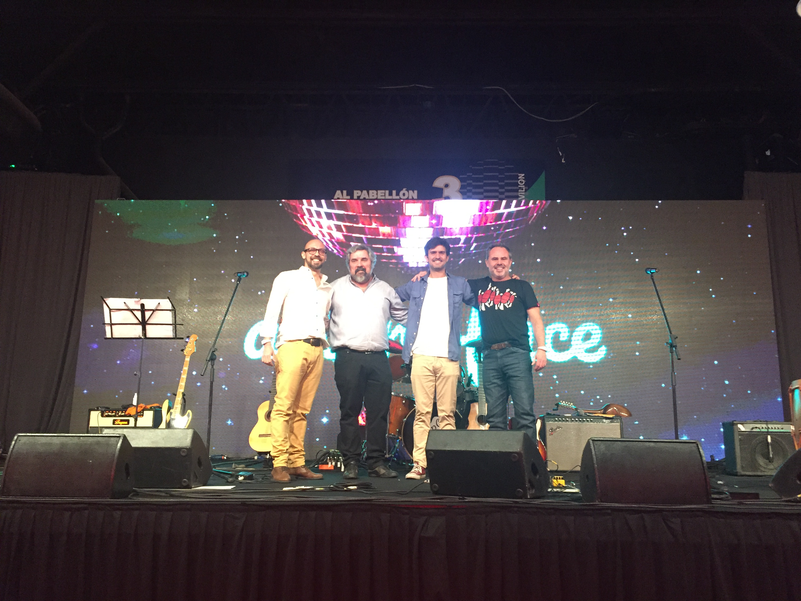

Conoce nuestra Historia
El conjunto musical "Los del Rio" surge a principios de los años noventa, con una formación diferente a la actual. Se juntaban esporádicamente haciendo presentaciones en ámbitos familiares y reuniones de amigos. Prácticamente disuelto, a fines del año 2018 se presenta la posibilidad de participar de un evento privado masivo. Así es cómo motiva a la formación actual a reunirse y planificar el show, los temas a tocar y los ensayos. Con nuevo nombre "Los del Rio Folkore", participan del show ante más de 2.500 personas siendo el puntapié de innumerables presentaciones posteriores. A partir de ese primer show, el resto es historia... Surgieron peñas en diferentes puntos de Capital y Gran Buenos Aires, eventos privados y grabaciones de varios temas en estudio y videoclips.
